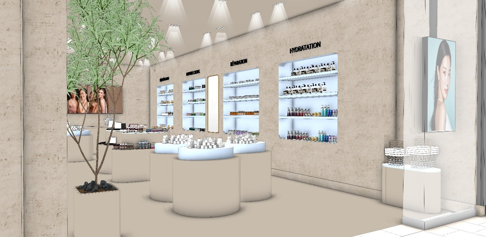
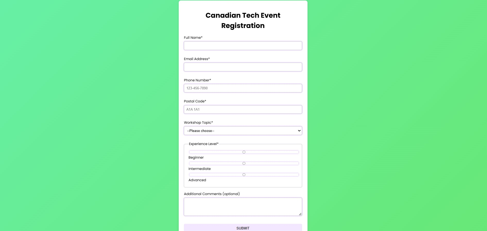
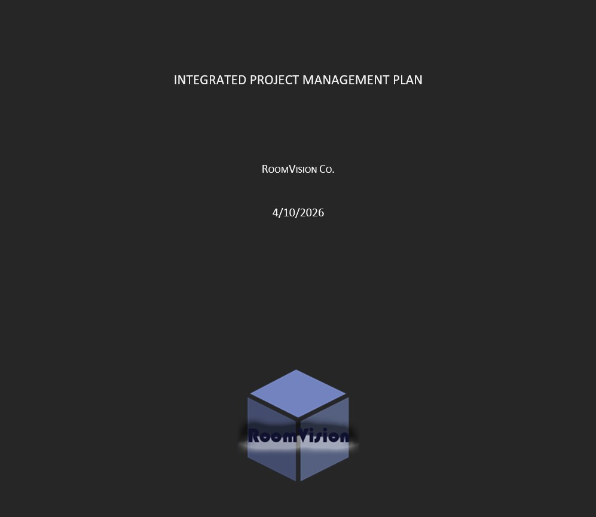

Interior Design Project
Completion Date: Sep 2025
Role: Interior Designer
Description: Developed an interior design concept including space planning, material selection, and visual presentation. The project focused on creating a functional and visually appealing environment based on the client’s needs.
Outcome: Produced design visuals and project materials that communicated the final concept clearly and professionally.

Canadian Tech Event Registration Form
Completion Date: April 2026
Role: Front-End Web Developer
Description: This project was developed as part of a web development course. The goal was to create an interactive registration form for a technology event using HTML, CSS, and JavaScript. The form collects user information, validates input fields, and provides feedback when information is missing or entered incorrectly.
Outcome: The final application successfully captures user input, validates form entries, and submits data through an API request. This project strengthened my understanding of form design, JavaScript validation, and responsive web development.

Vision Room Project
Completion Date: 2026
Role: Project Planner and Designer
Description: The Vision Room Project was developed for an IT Management course and focused on designing a workspace that supports productivity, creativity, and long-term goal achievement. The project involved researching user needs, planning the physical environment, and proposing technology solutions that would improve the overall experience of the space.
Outcome: The project resulted in a complete concept proposal that combined planning, design, and technology considerations. It demonstrated the importance of aligning environment, tools, and user needs when developing effective solutions.